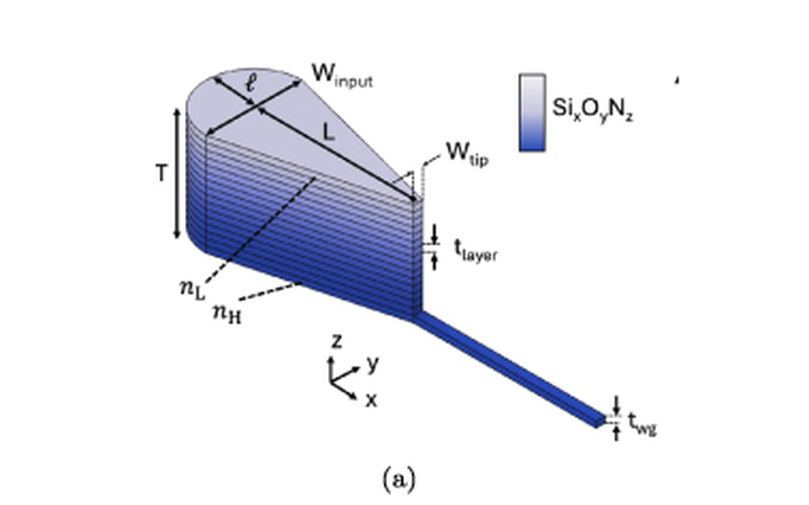

Focus areas
What we work on
Integrated photonics, nonlinear optics, optical materials, ultrafast optics, nanofabrication, and photonic crystals — connected threads that take a photonic circuit from concept to fabricated chip.

Inverse Design
Gradient-based inverse-design methodologies for optimizing nonlinear photonic structures beyond what intuition-driven design can reach.

Nonlinear Photonic Circuits
Devices exploiting nonlinear material platforms (e.g. SiN, GeSbS) for next-generation on-chip photonic functionality.

Foundry Tape-outs
Fabrication-ready layouts submitted to foundry partners, including collaborations with AIM Photonics on 220 nm SiN platforms and nanofabrication work with C2N, Université Paris-Saclay.

Simulation Frameworks
Custom Python tooling and full-wave EM simulation (Tidy3D, Lumerical, Meep) spanning 2D rapid prototyping to high-fidelity 3D models.

PIC Characterization
Fiber- and free-space-coupled optical testing of fabricated chips — coupling loss, spectral response, and device performance measured directly on the bench.

Photonic Packaging
Graded-index (GRIN) coupler design for low-loss, alignment-tolerant chip-to-chip and fiber-to-chip packaging, developed with MIT and NSF's FUTUR-IC alliance to enable dense, passively-assembled optical I/O for co-packaged optics.